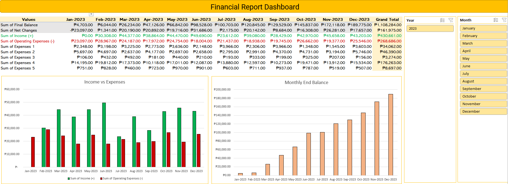
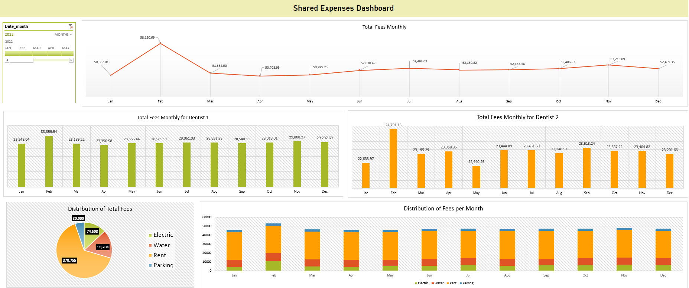
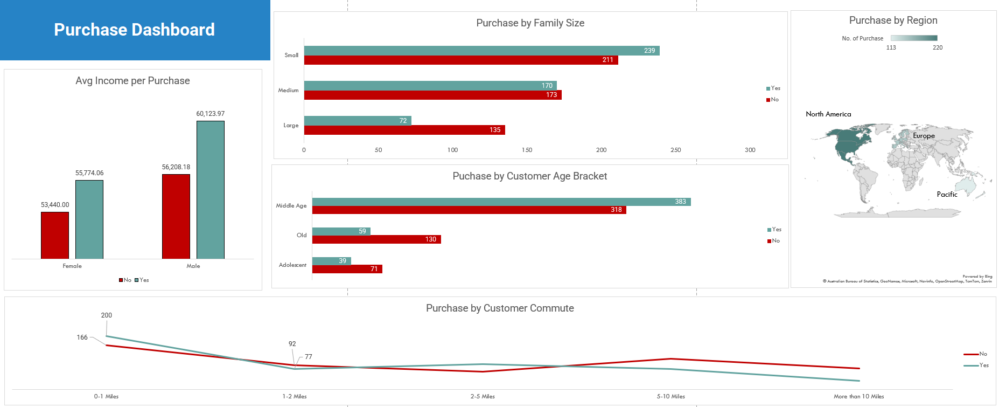

Profit & Loss Report
This is a report template designed for a small business to track revenue, operating expenses and income over a specific period of time

The Profit and Loss Excel report template dashboard I created provides a comprehensive view of a business's financial performance. Featuring a pivot table, graphs displaying income and expenses per month for 2023, and slicers for easy data filtering, the dashboard can assist businesses in recognizing trends, comparing monthly performance, and making informed decisions. Connected to a hidden table for easy updating, users can identify profitable areas, analyze expense impact, and improve financial performance. The dashboard's intuitive design ensures ease of comprehension, enabling businesses to make informed decisions on spending, revenue-generating activities, and areas for improvement.
A valuable tool for small businesses seeking financial improvement.
Other tabs included in the file are: Monthly Income, Monthly Operating Expenses, and Merged Table for Dashboard (Hidden)
View File
Shared Expenses Dashboard
This is a dashboard created for a small clinic run by two dentists includes various graphs for expense distribution per month.

The shared expenses dashboard created for a small clinic run by two dentists offers a detailed report of monthly spending. The dashboard includes a line graph for total fees and bar graphs for the monthly expense fees. Hidden tabs in the Excel file show the breakdown of each expense and the varying percentages each dentist needs to contribute. The pie graph reveals the expense distribution, and the stacked bar graph shows the monthly expense breakdown. This dashboard allows dentists to monitor spending, reduce costs, and make informed decisions to optimize expenses and improve their clinic's financial performance. The intuitive design and easy-to-read graphs provide an accessible way to identify areas for improvement.
View File
Purchase Report
This is a report used to investigate purchase patterns for bike company using Excel report with demographic and geographic data.

This data analytics project utilized an Excel report containing demographic and geographic data to investigate the purchase patterns for a bike company. Through the use of statistical techniques, the study aimed to identify the impact of variables such as gender, income, family size, age, commute mileage, and region on customer purchase behavior. The results revealed significant relationships between several demographic and geographic factors and the likelihood of a customer making a purchase from the bike company. The insights gained from the study were used to develop targeted marketing strategies to increase sales and revenue. Overall, the project highlighted the value of data analytics in driving informed business decisions.
View File